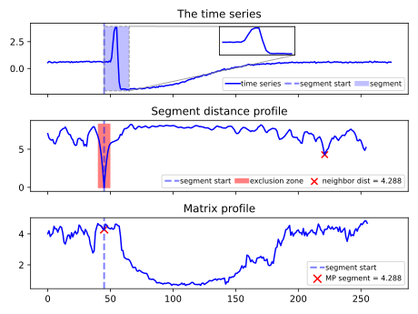

Note
Click here to download the full example code
Distance and Matrix Profiles¶
This example illustrates how the matrix profile is calculated. For each segment of a timeseries with a specified length, the distances between each subsequence and that segment are calculated. The smallest distance is returned, except for trivial match on the location where the segment is extracted from which is equal to zero.
# Author: Gilles Vandewiele
# License: BSD 3 clause
import numpy
import matplotlib.patches as patches
from mpl_toolkits.axes_grid1.inset_locator import inset_axes
import matplotlib.pyplot as plt
from tslearn.datasets import CachedDatasets
from tslearn.preprocessing import TimeSeriesScalerMeanVariance
from tslearn.matrix_profile import MatrixProfile
import warnings
warnings.filterwarnings('ignore')
# Set a seed to ensure determinism
numpy.random.seed(42)
# Load the Trace dataset
X_train, y_train, _, _ = CachedDatasets().load_dataset("Trace")
# Normalize the time series
scaler = TimeSeriesScalerMeanVariance()
X_train = scaler.fit_transform(X_train)
# Take the first time series
ts = X_train[0, :, :]
# We will take the spike as a segment
subseq_len = 20
start = 45
segment = ts[start:start + subseq_len]
# Create our matrix profile
matrix_profiler = MatrixProfile(subsequence_length=subseq_len, scale=True)
mp = matrix_profiler.fit_transform([ts]).flatten()
# Create a grid for our plots
fig, (ax1, ax2, ax3) = plt.subplots(3, 1, sharex=True)
# Plot our timeseries
ax1.plot(ts, c='b', label='time series')
ax1.add_patch(patches.Rectangle((start, numpy.min(ts) - 0.1), subseq_len,
numpy.max(ts) - numpy.min(ts) + 0.2,
facecolor='b', alpha=0.25,
label='segment'))
ax1.axvline(start, c='b', linestyle='--', lw=2, alpha=0.5,
label='segment start')
ax1.legend(loc='lower right', ncol=4, fontsize=8,
handletextpad=0.1, columnspacing=0.5)
ax1.set_title('The time series')
# Inset plot with our segment
fig_ax_in = ax1.inset_axes([0.5, 0.55, 0.2, 0.4])
fig_ax_in.plot(scaler.fit_transform(segment.reshape(1, -1, 1))[0], c='b')
ax1.indicate_inset(inset_ax=fig_ax_in, transform=ax1.transData,
bounds=[start, numpy.min(ts) - 0.1, subseq_len,
numpy.max(ts) - numpy.min(ts) + 0.2],
linestyle='--', alpha=0.75)
fig_ax_in.tick_params(labelleft=False, labelbottom=False)
fig_ax_in.xaxis.set_visible(False)
fig_ax_in.yaxis.set_visible(False)
# Calculate a distance profile, which represents the distance from each
# subsequence of the time series and the segment
distances = []
for i in range(len(ts) - subseq_len):
scaled_ts = scaler.fit_transform(ts[i:i+subseq_len].reshape(1, -1, 1))
scaled_segment = scaler.fit_transform(segment.reshape(1, -1, 1))
distances.append(numpy.linalg.norm(scaled_ts - scaled_segment))
# Mask out the distances in the trivial match zone, get the nearest
# neighbor and put the old distances back in place so we can plot them.
distances = numpy.array(distances)
mask = list(range(start - subseq_len // 4, start + subseq_len // 4))
old_distances = distances[mask]
distances[mask] = numpy.inf
nearest_neighbor = numpy.argmin(distances)
dist_nn = distances[nearest_neighbor]
distances[mask] = old_distances
# Plot our distance profile
ax2.plot(distances, c='b')
ax2.set_title('Segment distance profile')
dist_diff = numpy.max(distances) - numpy.min(distances)
ax2.add_patch(patches.Rectangle((start - subseq_len // 4,
numpy.min(distances) - 0.1),
subseq_len // 2,
dist_diff + 0.2,
facecolor='r', alpha=0.5,
label='exclusion zone'))
ax2.scatter(nearest_neighbor, dist_nn, c='r', marker='x', s=50,
label='neighbor dist = {}'.format(numpy.around(dist_nn, 3)))
ax2.axvline(start, c='b', linestyle='--', lw=2, alpha=0.5,
label='segment start')
ax2.legend(loc='lower right', fontsize=8, ncol=3,
handletextpad=0.1, columnspacing=0.5)
# Plot our matrix profile
ax3.plot(mp, c='b')
ax3.set_title('Matrix profile')
ax3.scatter(start, mp[start],
c='r', marker='x', s=75,
label='MP segment = {}'.format(numpy.around(mp[start], 3)))
ax3.axvline(start, c='b', linestyle='--', lw=2, alpha=0.5,
label='segment start')
ax3.legend(loc='lower right', fontsize=8,
handletextpad=0.1, columnspacing=0.25)
plt.tight_layout()
plt.show()
Total running time of the script: ( 0 minutes 0.597 seconds)